開始使用
QCalc 能做什麼
QCalc 是一款像在紙上寫算式一樣輸入，就能立刻得到結果的計算機。計算由桌面計算機 Qalculate! 的引擎 libqalculate 負責。
- 從四則運算到分數、根號、單位、貨幣、微分、積分、方程式、矩陣，都能在一行裡計算。
- 能算出精確值時會顯示精確值（√2、π/2、7/12），旁邊也顯示小數近似值。
- 價格、貸款、日期、換算、統計、槽體等日常計算都在「工具」裡，輸入數字就會顯示結果。
- 2D、3D 圖形，以及面積、長度、旋轉體的體積。
- QCalc 不收集個人資料。只有下載匯率時才使用網路。
結果僅供參考。請勿用於交易或證明、設計與施工、報稅等不容許錯誤的場合（注意事項）。
最初的三個計算
可以做什麼 用按鍵輸入算式，按 =，結果就會進入歷史紀錄。輸入時，輸入欄下方已經會顯示結果。
- 打開 App，用按鍵輸入
2 + 3 × 4。輸入欄下方顯示「= 14」。 - 按 =。算式和「= 14」進入歷史紀錄，輸入欄清空。
- 接著輸入
60 mph to km/h（「to」在 → 鍵）。顯示「≈ 96.56064 km/h」。 - 第三個是
sqrt(2)，也可以用 √ 鍵。顯示「= √2 ≈ 1.414213562」，即精確值和近似值。
1/3 + 1/4 → = 7/12 ≈ 0.5833333333
點一下歷史紀錄中的結果，可以放入輸入欄或複製。
- 英文字母 x 是變數，不是「乘」。乘法請用 × 鍵（或 *）。
1.14.0 的新功能
- 接近真實的 3D：3D 改由裝置的 GPU（WebGL 2）繪製，有接近真實的光線與陰影：3D 圖形、2D 圖形的 ⟳ 3D、立體圖形與容器，以及由輪廓做旋轉體（3D 圖形）。
- 透明：按 透明，曲面和立體會變透明，看得到背面、內側的面和兩個曲面相交處。用滑桿調整不透明度；透明 關閉時移動滑桿，也會開啟透明。有兩個以上時，可選擇哪些要透明（例如只有儲槽的 容器）。
- 往任何方向旋轉：用一根手指就能往任何方向旋轉，也能越過正上方和正下方。按立方體圖案的按鈕，可立即改為正面、上方或側面。
- 材料的樣子與新增：立體以 材料（密度） 所選材料的樣子繪製，儲槽的液體以水、海水、煤油、汽油的樣子繪製。材料新增不鏽鋼、鋁、銅、黃銅、木、PLA、ABS、壓克力。
- 免費試用一次 3D：沒有 QCalc Pro 也能免費開啟一次 3D（免費可用的功能）。
- 到 Google Play 評分：在 關於這個 App 按 到 Google Play 評分，即可在 Google Play 的 QCalc 頁面給星等與評論。
- 圖形的範圍：修正畫完圖形後馬上輸入的範圍 a、b 會被 App 找到的範圍取代的問題（面積與長度）。
1.13.0 的新功能
- 各畫面的顯示位數：每個工具畫面都能選擇結果要顯示幾位數。從畫面標題右邊的 ⋯ 打開 顯示位數…（各畫面的顯示位數）。
- 三種選法：從 建議（自動）、有效位數、小數點後 中選擇，再用 + 和 − 決定位數。
- 末尾的 0：選了位數時，可選 保留（2.50） 或 去掉（2.5）。
- 變更的標記：改過預設位數的畫面，會在 ⋯ 的 顯示位數… 和設定的一覽加上「已變更」標記。
- 恢復預設值：只還原該畫面時按 恢復為預設值（建議）；全部畫面則在設定的 各畫面的顯示位數 中按 全部恢復為預設值（建議）。
- 金額的位數：金額依裝置地區的貨幣位數顯示（新台幣到 1 元，美元到 0.01 元）。決定的是地區而不是語言（不論哪種語言，德國的裝置都用歐元）。
1.12.0 的新功能
- 更容易懂：選單變成 8 個項目，工具集中在 工具。在各工具中點一下範例就會填入，結果立刻顯示。
- 日常工具：價格：折扣與稅、百分比、單價比較：哪個便宜、平分帳單、貸款、儲蓄與複利、日期、時間、單位與貨幣換算、統計、計算筆記。
- 數字格式：可選 1,234.5、1.234,5 或 1 234,5（數字格式）。
- 歷史紀錄：搜尋、星號置頂、簡短備註、所選各行的合計；記憶鍵（歷史紀錄與記憶）。
- 從 2D 到 3D：按一下 ⟳ 3D，圖形中的區域立刻變成旋轉體並以 3D 顯示（3D：QCalc Pro）；還有已知截面的立體、說明方法的線，以及帕普斯定理（製作立體）。
- 快速開啟：小工具、快速設定圖塊、圖示上的捷徑（小工具、圖塊與捷徑）。
- 分享：圖形的圖片和 3D 圖形的動態 GIF（分享）。
- 以 3D 觀看立體與容器：在 立體圖形 與 容器液量 中按圖左上方的 ⟳ 3D，就能以輸入的大小用 3D 觀看形狀。容器可以拖曳液面來確認量（以 3D 觀看立體與容器。3D 是 QCalc Pro）。
- 結果的位數：幾何圖形、容器等結果的位數，可設定小數點後位數、有效數字、各種量分別設定與捨入方式。% 一開始就是小數點後 1 位（各畫面的顯示位數）。
- QCalc Pro：表格的 CSV、槽體的封頭與容量表、由剖面資料製作的立體、STL 檔、更多計算筆記等（QCalc Pro）。
- 這本說明書：就在 App 裡。按工具或面板右上角的「?」會打開該節。
App 中的範例與提示
可以做什麼 選單中的 範例與使用說明 有點一下就放入輸入欄的算式和提示。最上面的 使用說明書 會打開這本說明書。
- 按左上角的 ☰，選擇 範例與使用說明。
- 點一下算式。面板關閉，算式放入輸入欄。
- 按 = 計算。
這本說明書不用網路也能閱讀。附照片的詳細版（網頁）和 PDF 從最上面的連結打開。
畫面說明
| 編號 | 名稱 | 用途 |
|---|---|---|
| 1 | ☰（選單） | 打開工具、圖形、清單、設定等 |
| 2 | 按鈕 | 點一下切換角度單位（RAD、DEG）、精確或近似、十進位或十六進位 |
| 3 | 🕘（歷史紀錄選單） | 搜尋歷史紀錄、選取行、匯出、清除 |
| 4 | 歷史紀錄 | 算式和結果，最新的在下面 |
| 5 | 輸入欄 | 輸入的地方；下方是輸入中的結果（預覽） |
| 6 | 按鍵頁 | 切換 123、函數、微積分、矩陣 四頁 |
| 7 | 按鍵 | 數字、運算子和函數 |
| 8 | = 鍵 | 計算，並把算式和結果留在歷史紀錄 |
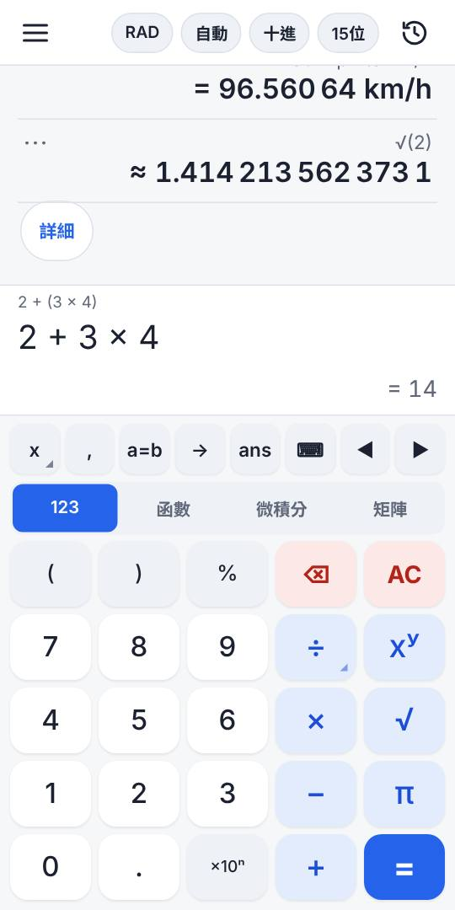
在文字較大的手機上，最上排按鍵（x、ans、箭頭、⌨）會隱藏。按分頁最後的 ⌨ 就會顯示。
基本計算
輸入算式
可以做什麼 像數學課本那樣用按鍵輸入算式。按 ⌨ 後，也可以用手機的鍵盤輸入。
- 用數字和運算子按鍵輸入算式。括號在 ( ) 鍵。
- 按 函數 頁的按鍵（sin、log、√ 等）會輸入「sin(」等。
- 單位和貨幣用名稱寫（
5 km、100 USD）。換算用「to」（5 km to mi）。 - 按 = 計算。
2^10 → = 1024，5! → = 120，sin(30°) → = 1/2
在空的輸入欄按 ÷ × + 等，會接著上一個結果「ans」計算。
- 括號沒有成對會出現錯誤。訊息會說明要修正的地方。
看懂結果：精確值、近似值、分數
可以做什麼 以「=」開頭的結果是精確值，以「≈」開頭的是近似值。含分數或 √ 的結果也會顯示小數。
1/3 + 1/4→= 7/12 ≈ 0.5833333333（保留分數，並附小數）sqrt(8)→= 2√2 ≈ 2.828427125pi × 2→= 2π ≈ 6.283185307
- 用上方的按鈕切換精確、近似、自動。
- 位數是 設定 中的 精確度（有效位數）（預設 10）。
Pro 這是 QCalc Pro 的功能。 1000 位以內免費。超過 1000 位、最多 200000 位是 QCalc Pro 的功能。
很長的結果可在歷史紀錄中左右捲動讀完所有位數；複製時會複製所有位數。
刪除與復原
可以做什麼 ⌫ 刪除一個字元，AC 清空輸入欄。剛清空後，可用輸入欄上方的 復原 復原。
- ⌫ 刪除游標前的一個字元；按住可以連續刪除。
- 用 AC 清空輸入欄後，上方出現 復原。
- 按 復原，算式就會回來。
從歷史紀錄刪除的行，也能在幾秒內用畫面下方的 復原 復原。
數字格式：小數點
可以做什麼 選擇小數點用「.」還是「,」，以及位數怎麼分組。一開始 QCalc 依手機的地區顯示數字。
- 打開 設定。
- 在 數字格式 中選擇 自動、1,234.5、1.234,5 或 1 234,5。
- 輸入和顯示都依照所選的格式。
選 1.234,5 時，二點五寫成 2,5：2,5 + 3,75 → = 6,25
小數點是「,」時，函數的引數用「;」分隔：max(1,5; 2)。
- 小數點是「,」時寫
1.5會出現錯誤；訊息會顯示正確寫法。
歷史紀錄與記憶
可以做什麼 算式和結果會留在歷史紀錄中，最多 300 行。右上角的 🕘 可以搜尋、合計所選的行、匯出和清除。
- 點一下歷史紀錄中的結果，可選 將運算式放進輸入欄、複製結果 等。
- 行右側的 ⋯ 有 ☆ 固定在最上方 和 加上簡短備註。
- 🕘 有 搜尋記錄、選取多行：合計、平均、複製、匯出記錄（CSV 檔）、清除全部記錄。
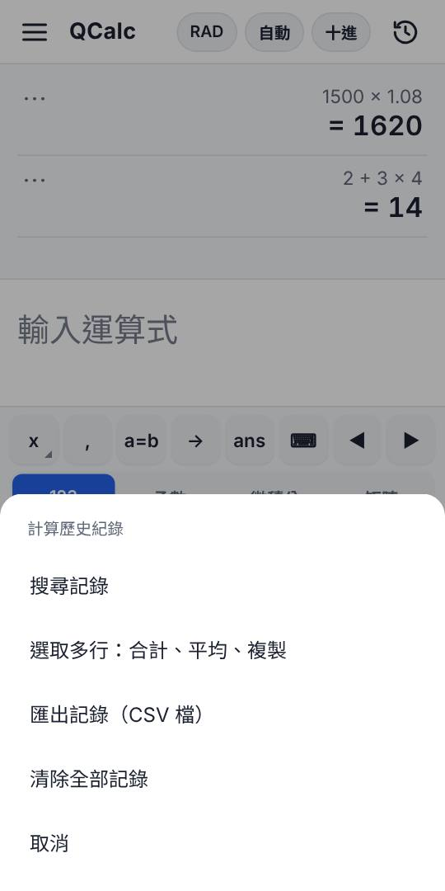
用星號置頂的行，即使歷史紀錄滿了也會保留。
置頂、備註與搜尋
- 在行的 ⋯ 中選 ☆ 固定在最上方，該行會和其他置頂的行一起移到上面。
- 在 ⋯ 中選 加上簡短備註，寫下簡短備註。備註顯示在算式上方。
- 🕘 的 搜尋記錄 只顯示算式、結果或備註中含有所輸入文字的行。
備註為「房租」的行，搜尋「房租」就會出現。
加總多行
- 在 🕘 中選 選取多行：合計、平均、複製。
- 點選要加總的行。
- 下方顯示合計和平均；單位一致時也會加上單位。複製 複製這些行。
- 單位不同的行（m 和 kg）無法相加；會顯示原因。
匯出歷史紀錄（CSV）
Pro 這是 QCalc Pro 的功能。
可以做什麼 把歷史紀錄存成試算表可以打開的 CSV 檔。
- 在 🕘 中選 匯出記錄（CSV 檔）。
- 在 Android 的儲存畫面中選擇儲存位置。
記憶鍵（M+ M− MR MC）
可以做什麼 電子計算機的記憶鍵。數值以精確值保存。
- 打開 設定 的 更多設定，開啟 顯示記憶鍵（M+ M− MR MC）。
- 顯示結果時，M+ 把它加到記憶中，M− 把它減去。
- MR 把記憶放入輸入欄；MC 清除記憶。
按鍵與輸入輔助
四個按鍵頁
可以做什麼 按鍵分在四頁，用上方的分頁切換。
| 頁 | 主要按鍵 |
|---|---|
| 123 | 數字、+ − × ÷、括號、%、^、√ |
| 函數 | sin、cos、tan、log、ln、絕對值、階乘等 |
| 微積分 | 微分 d/dx、積分 ∫、極限 lim、總和 Σ、乘積 Π、方程式 |
| 矩陣 | 矩陣 ▦、行列式 det、轉置、反矩陣 |
不知道函數的名稱時，在 清單（函數、單位、常數） 中尋找（清單）。
空格 □（表單）
可以做什麼 按積分或極限鍵，會打開有空格 □ 的表單。填好空格，算式就完成了。
- 在 微積分 頁按 ∫。
- 輸入函數、下限和上限。下一欄 ▶ 移到下一格。
- 結果顯示在下方。= 把它留在歷史紀錄。
表單的 ⋯ 有 清除所有欄 和 這個表單的使用方法 ›。
候選
可以做什麼 輸入時，輸入欄下方會出現候選：「to」之後是換算的目標單位；用鍵盤輸入時是函數和單位的名稱。
- 輸入到
5 km to，會出現 mi、m、ft 等候選。 - 點一下候選就會輸入。
函數、單位、貨幣的寫法
可以做什麼 算式的寫法和 Qalculate! 相同。常用的寫法：
| 這樣寫 | 意思 |
|---|---|
sqrt(x)、√x | 平方根 |
x^2 | 次方 |
5 km to mi | 單位換算 |
100 USD to EUR | 貨幣換算（使用匯率） |
solve(x^2 − 5x + 6 = 0) | 解方程式 |
diff(x^3) | 微分 |
integrate(x^2, 0, 1) | 定積分 |
ans | 上一個結果 |
日本的十種傳統單位（坪、尺、升、貫等）也能用：30 tsubo to m^2。
清單：函數、單位、常數、自訂定義
可以做什麼 選單中的 清單（函數、單位、常數） 有四個分頁：函數、單位與貨幣、變數與常數、自訂定義，各有搜尋。
- 從 ☰ 打開 清單（函數、單位、常數）。
- 選擇分頁，在上方的欄位輸入名稱的一部分。
- 點一下項目可閱讀說明；插入 把它放入輸入欄。
在自訂定義分頁可以保存變數（r = 5 cm）和函數，下次也會保留。
貨幣與匯率
可以做什麼 貨幣像 100 USD to EUR 這樣換算。匯率會在開啟 App 時（啟動時、回到 App 時）自動更新（需要網路連線）。國際漫遊和數據節省模式時不會自動更新，需要時請按 立即更新。
- 要立刻更新，請按 設定 中的 立即更新匯率。
- 最後更新的時間顯示在同一行。
- 沒有網路時無法更新，會使用最後下載的匯率。
比特幣（BTC）以及黃金（XAU）、白銀（XAG）、白金（XPT）、鈀金（XPD）的價格，也會和匯率一起更新。
匯率會存在裝置上，所以在沒有網路的地方，也能用最後下載的匯率換算。出門旅行前先打開一次 App 會比較安心。
物理常數是計算引擎內建的 CODATA 2022 數值，不從網路取得。新的建議值會隨 App 的更新加入。
工具
找工具
可以做什麼 選單中的 工具 有日常工具，以及圖形、體積、資料的工具。用想做的事來找。
- 1「?」：打開這本說明書的該工具；2 範例：點一下就填入；3 欄位：輸入數字（灰色數字是範例）；4 結果：點一下把算式放入輸入欄、把結果留在歷史紀錄或複製；5 一行注意文字（與金錢或安全有關的工具）；6 一行說明
- 從 ☰ 打開 工具。
- 在上方輸入想做的事，例如「貸款」、「槽」、「平均」。
- 點一下工具。
- 點一下範例或輸入數字。結果立刻顯示。
最近用過的工具會排在最前面。最下面的 快速開啟 QCalc 可加入小工具或圖塊。
價格：折扣與稅
可以做什麼 含稅或未稅的價格、一到兩次折扣，以及捨入方式。
- 在 工具 中打開 價格：折扣與稅。
- 輸入價格、折扣（%）和稅。
- 選擇價格是否含稅，以及如何捨入。
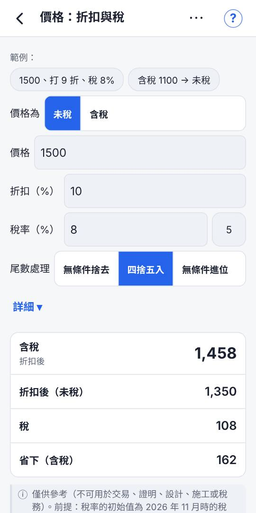
1500 打九折（折扣 10%），稅 8% → 含稅 1,458（未稅 1,350，稅 108）
- 要從含稅價格求未稅價格時，請先選「含稅」。
百分比
可以做什麼 A 是 B 的百分之幾，以及從 A 到 B 的變化是百分之幾。
- 打開 百分比，選擇要算什麼。
- 輸入 A 和 B。
120 中的 30 → 25%。從 80 到 100 → 增加 25%
單價：哪個比較便宜
可以做什麼 比較兩種商品每 100 g（100 mL、每個）的價格。
- 打開 單價比較：哪個便宜。
- 輸入 A 和 B 的價格和數量（500 g、1 kg）。
500 g 賣 298 和 1 kg 賣 498 → B 比較便宜（每 100 g 59.6 和 49.8，便宜 16.4%）
分攤帳單
可以做什麼 每人要付的金額，依所選方式捨入。
- 打開 平分帳單，輸入總額和人數。
- 選擇無條件進位或捨去。
10000 由 3 人分 → 每人 3,400（無條件進位；多收 200）
貸款
可以做什麼 每月還款額、利息總額和還款表，可選本息平均攤還或本金平均攤還。
- 打開 貸款。
- 輸入金額、年利率和年數。
- 選擇還款方式。
- 打開 還款表（每月） 查看還款表。
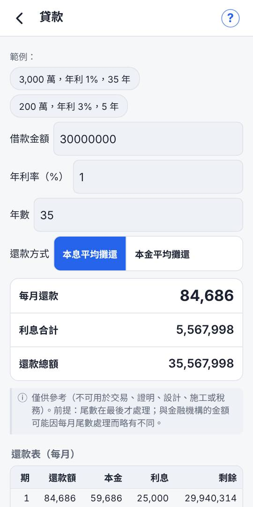
30,000,000，年利率 1%，35 年（本息平均）→ 每月 84,686，利息總額 5,567,998
Pro 這是 QCalc Pro 的功能。 把還款表存成 CSV 檔是 QCalc Pro 的功能（查看和複製免費）。
- 把 1% 輸入成 0.01 會變成 0.01%。請輸入百分比的數字。
儲蓄與複利
可以做什麼 每月儲蓄或一筆存款以複利計算會變成多少。
- 打開 儲蓄與複利，輸入每月金額（或起始金額）、年利率和年數。
每月 30,000，3%，20 年 → 9,849,060（本金 7,200,000，利息 2,649,060）
日期
可以做什麼 兩個日期之間的天數、n 天後或前、年齡、星期幾。
- 打開 日期，選擇要算什麼。
- 輸入日期和天數。
從今天起 100 天後 → 那天的日期和星期
時間
可以做什麼 h:mm 的加減，以及扣除休息後的工作時數和薪資。
- 打開 時間，輸入開始、結束和休息時間。
- 輸入時薪就會算出薪資。
9:00 到 17:30，休息 1:00 → 工作 7:30（7.5 小時）
單位與貨幣換算
可以做什麼 在兩行中的任一行輸入數字，另一行就會換算。長度、重量、體積、溫度、油耗、貨幣等。
- 打開 單位與貨幣換算，用上方的按鈕選擇量的種類。
- 選擇兩行的單位。
- 在任一行輸入數字。
- ⇅ 交換上下兩行。
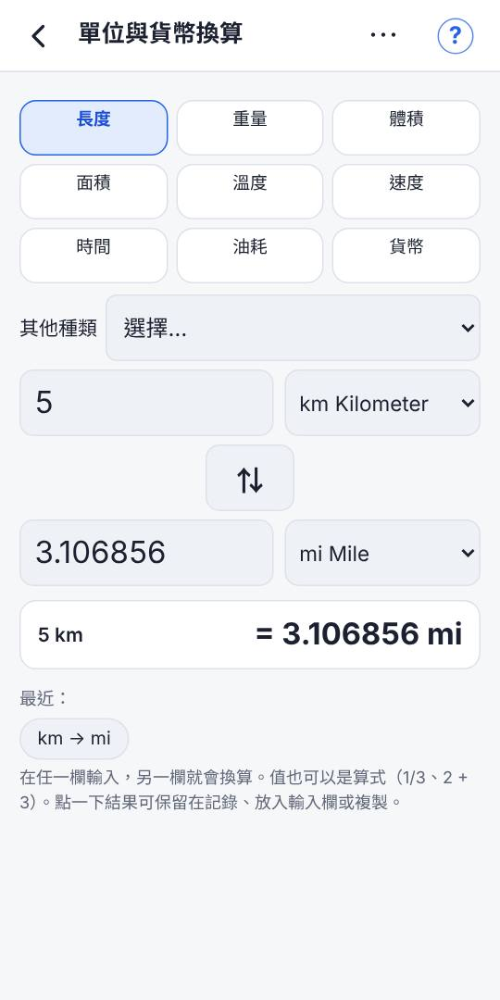
5 km → 3.106856 mi
點一下結果行，可以把「5 km to mi」放入輸入欄或留在歷史紀錄。
圖形：面積、體積、長度
可以做什麼 依圖選擇圖形並輸入尺寸，就會顯示面積、周長、體積和表面積。
- 在 工具 中打開 平面圖形 或 立體圖形。
- 點一下圖形的圖。
- 輸入圖上標示的尺寸（r、h）。圓的尺寸可選半徑或直徑。
- 輸入時結果會變化；點一下可使用或複製其算式。
半徑 2 的球 → 體積 32π/3 ≈ 33.5103，表面積 16π
選擇材質就能算出重量。
按圖左上方的 ⟳ 3D，可以用 3D 旋轉觀看該立體（以 3D 觀看立體與容器）。
槽體：液量與液位
可以做什麼 由液面高度求臥式或立式槽體、圓形容器中的液量，也可由液量求高度。
- 在 工具 中打開 容器液量。
- 選擇形狀，輸入直徑（或半徑）和長度。
- 輸入液面高度，選擇長度單位。
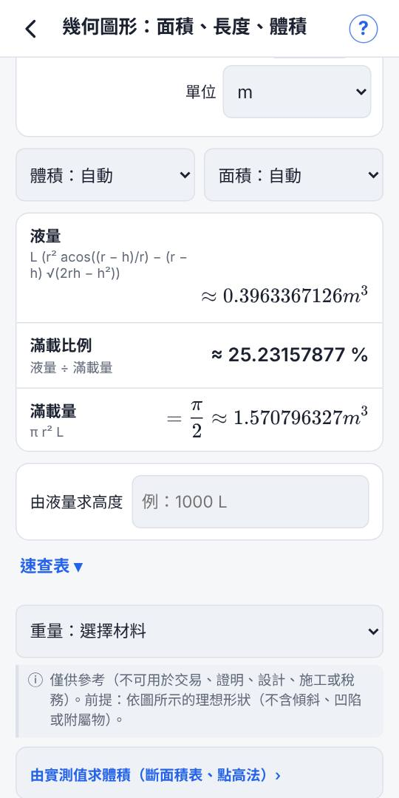
臥式，直徑 1 m，長度 2 m，液面 30 cm → 0.396337 m³（約 396 L）
速查表 ▾ 可看到每個高度的液量。
- 在直徑欄輸入半徑，結果大約只有四分之一。請確認是半徑還是直徑。
槽體的封頭與容量表
Pro 這是 QCalc Pro 的功能。
可以做什麼 把槽體兩端的封頭（半球形、2:1 半橢圓形、碟形）加進液量和總體積，並製作每個高度液量的表。
- 在 容器液量 中選擇臥式或立式圓筒。
- 在 封頭 中選 半球 或 半橢圓 2:1；碟形在 其他封頭 ▾。
- L 是筒身的長度（不含封頭）。
- 在 速查表 ▾ 輸入間隔，就會得到高度和液量的表，可以複製或存成 CSV。
平板封頭（和以前一樣只有圓筒）免費。
以 3D 觀看立體與容器
Pro 這是 QCalc Pro 的功能。
可以做什麼 以在 立體圖形 或 容器液量 中輸入的大小，用 3D 旋轉觀看形狀。上方會大大地顯示與工具相同的體積與表面積（容器則為液量與滿載量）。
- 在工具的 立體圖形 或 容器液量 中選擇形狀並輸入大小。
- 按圖左上方的 ⟳ 3D（朗讀為 以 3D 檢視）。形狀會長成 3D。
- 用一根手指可往任何方向旋轉（也能越過正上方和正下方）。兩根手指捏合或張開可縮放，一起滑動可移動畫面，扭轉可在畫面內旋轉。 旋轉體可用 對半切開 看切面。
- 按立方體圖案的按鈕，可立即改為正面、上方或側面。按 ⟲ 回到最初的方向與大小。
- ← 回到幾何圖形 會回到形狀與大小相同的工具。
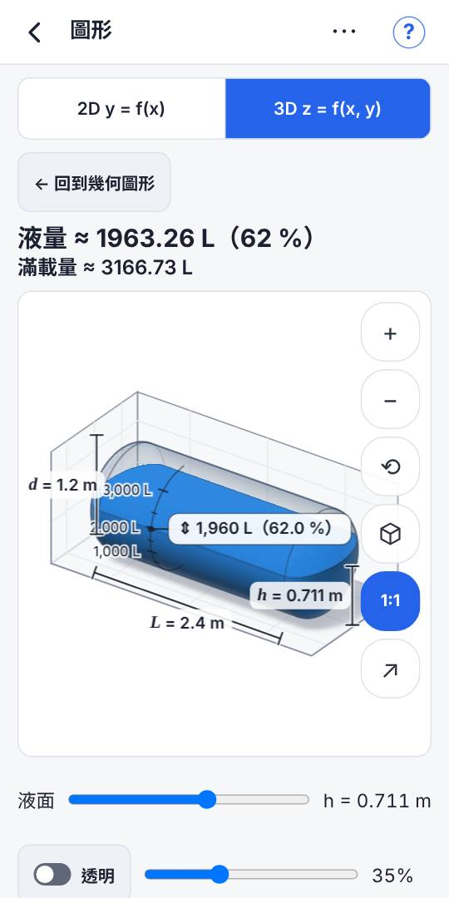
直徑 30 cm、高 50 cm 的圓柱 → 體積 11250π ≈ 35342.91735 cm³
容器畫成像透明玻璃，液體畫成所選液體（水、海水、煤油、汽油）樣子的立體（選其他時為 App 的顏色）。從液面旁（顯示量的方框）上下拖曳，液面就會移動，工具的 液面高度 也會改變。在其他地方拖曳則是旋轉。下方的 液面 滑桿也能移動液面。
立體以重量所選材料（材料（密度）：鐵、不鏽鋼、鋁、銅、黃銅、木、PLA、ABS、壓克力等）的樣子繪製；未選時為藍色。透明 和其下方的按鈕在這裡也能使用（3D 圖形）。
壁上的刻度是每個整數量一格。臥式或球形儲槽中，可以看出間隔並不相等。
液面旁的數字為了方便讀取已經捨入（有效數字 3 位，% 為小數點後 1 位）。精確值在上方的大字與工具的結果中（各畫面的顯示位數）。
免費版會在結果正上方顯示 在 3D 中旋轉查看（QCalc Pro） 這一列。
由測量值求體積
可以做什麼 由斷面表（平均斷面法、辛普森法）或高度方格，求填土或水池的體積。
- 在 工具 中打開 由實測值求體積。
- 選擇斷面或點的高度，輸入距離和面積（或高度）。
- 選擇長度單位，體積以 m³ 和 L 顯示。
斷面 x²（0 到 4，每 1 m）→ 平均斷面法 22 m³，辛普森法 64/3 m³ ≈ 21.33 m³
可以把從試算表複製的兩欄貼到表中。
由剖面資料製作立體
Pro 這是 QCalc Pro 的功能。
可以做什麼 由沿軸測量的位置和直徑的表，求車削零件或容器的體積、容量、重量和表面積。
- 在 工具 中打開 由輪廓求旋轉體。
- 輸入位置和直徑（或半徑）。同一位置的兩行形成一個階梯。
- 選擇單位（mm、cm、m、in）。
- 詳細 ▾ 可加入容器的內側剖面和陶瓷的收縮率。
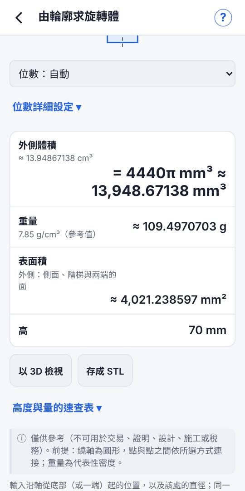
範例的階梯軸 → 外側體積 4440π mm³ ≈ 13.95 cm³，鐵製約 109.5 g
以 3D 檢視 可看繞軸旋轉而成的立體，台階、平的端面和內側都和 STL 檔一樣；用一根手指轉動，對半切開 可看切面，← 回到輪廓 回到表格。STL 檔可用 3D 印表機列印（STL 檔）。
3D 印表機用的 STL 檔
Pro 這是 QCalc Pro 的功能。
可以做什麼 把旋轉體、已知截面的立體或由剖面資料製作的立體，存成 3D 印表機用的 STL 檔。
- 按立體結果下方的 存成 STL。
- 選擇「1 單位 = □ mm」和三角形的細緻程度。
- 按 儲存 STL 檔案，選擇儲存位置。
列印前請在切片軟體中確認尺寸和壁厚。
統計
可以做什麼 一欄時算平均、中位數、標準差、四分位數等；兩欄時算迴歸直線和相關係數。
- 在 工具 中打開 統計。
- 輸入數值，或從試算表貼上。
- 兩欄時，📈 以圖形顯示 會畫出點和直線。
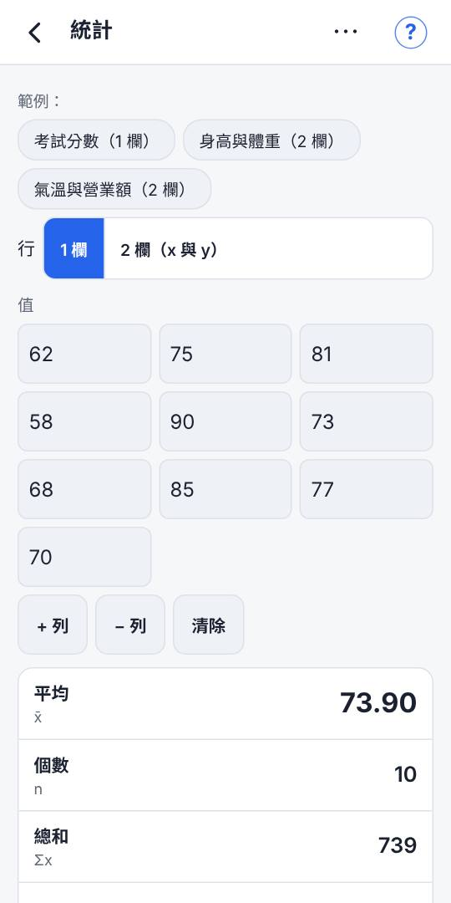
10 人的分數 → 平均 73.90，中位數 74.00，標準差（樣本）9.94
四分位數先以日本高中課本的方法顯示；試算表的方法在「更多」裡。
- 有不是數字的值時，會顯示所在行和修正方法。
計算筆記
可以做什麼 一行寫一個計算，右邊顯示結果的筆記。替數值取名，就能在下面的行使用。
- 在 工具 中打開 計算筆記。
- 一行寫一個計算，例如
rent = 85000 JPY。 - 在後面的行使用名稱：
rent × 12。 - 含有合計字樣的行會把上面的結果相加。
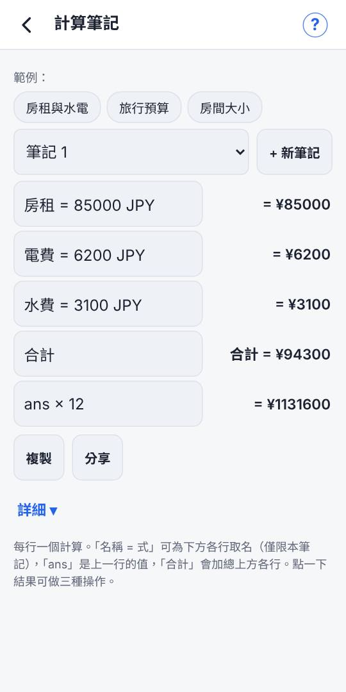
房租 85000、電費 6200、水費 3100（JPY）→ 合計行顯示 ¥94300
Pro 這是 QCalc Pro 的功能。 第一則筆記免費。更多筆記以及存成文字或 CSV 是 QCalc Pro 的功能。
以 # 或 // 開頭的行是註解（不計算）。
圖形
2D 圖形
可以做什麼 畫出 y = f(x) 的圖形。拖曳可移動，兩指可縮放。
- 從 ☰ 打開 圖形（或按輸入欄上方的 📈）。
- 每行輸入一個函數，並輸入 x 的範圍。
- 按 繪製。
- 點一下圖形可看到該點的座標。
導數、切線、極值 ▾ 可求導函數、切線、零點和極值。
點一下圖形下方的範例就會畫出來。
面積與長度
可以做什麼 曲線與 x 軸之間或兩條曲線之間的面積，以及曲線的長度。區間的端點可以用手指拖曳。
- 在 2D 圖形中畫出函數。
- 打開 面積與長度 ▾。
- 輸入區間 a、b，或拖曳兩端的線。
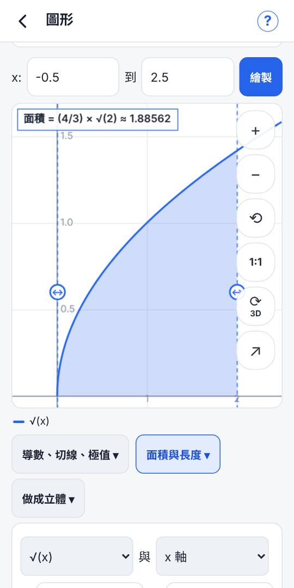
√x，0 到 2 → 面積 1.8856181
切換到 長度 就是曲線的長度。
製作立體（旋轉體）
可以做什麼 把 2D 圖形中的區域繞軸旋轉所得立體的體積和表面積。
- 在 2D 圖形中畫出函數（例如
x和x^2）。 - 按圖形的圓形按鈕 ⟳ 3D。繞 x 軸旋轉的立體立刻以 3D 顯示，上方以大字顯示體積（QCalc Pro）。免費版則在 2D 圖形中顯示立體的截面（映在軸的另一側）與體積。
- 要換其他軸，按 ← 回到 2D 回到 2D，再點一下那條線；y = k 的線可以用手指拖曳。按 以 3D 檢視 可再以 3D 查看。
- ↶ 復原 回到上一個軸。
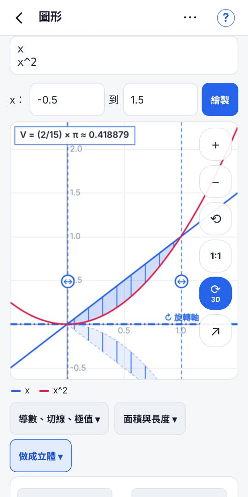
y = x 和 y = x² 之間，繞 x 軸 → 體積 2π/15 ≈ 0.41887902
以線條顯示方法 會畫出圓盤（墊圈）或圓柱殼。帕普斯－古爾丁定理： 這一行比較由重心求得的體積和積分。
Pro 這是 QCalc Pro 的功能。 在 3D 中用手指旋轉立體，和 3D 圖形一樣是 QCalc Pro 的功能。免費版會改為顯示 在 3D 中旋轉查看（QCalc Pro） 這一列。
已知截面的立體
可以做什麼 以兩條曲線之間的區域為底，在上面立起正方形、正三角形或半圓的立體的體積。
- 打開 做成立體 ▾。
- 選擇 截面立體（在底面上立起形狀）。
- 選擇形狀（□ △ ◠）；其他形狀在 詳細：其他形狀 ▾。
在 y = x 和 y = x² 之間的區域立起正方形 → 體積 1/30
3D 圖形
Pro 這是 QCalc Pro 的功能。
可以做什麼 以 3D 畫出 z = f(x, y) 的曲面和立體，用手指旋轉。
- 在 圖形 中選擇 3D z = f(x, y)。
- 輸入最多四個函數和 x、y 的範圍，按 繪製。
- 用一根手指可往任何方向旋轉（也能越過正上方和正下方）。兩根手指捏合或張開可縮放，一起滑動可移動畫面，扭轉可在畫面內旋轉。
- 按立方體圖案的按鈕，可立即改為正面、上方或側面。按 ⟲ 回到最初的方向與大小。
- 按 透明，曲面和立體會變透明，看得到背面、內側的面和兩個曲面相交處，邊線仍會保留。用旁邊的滑桿調整不透明度；透明 關閉時移動滑桿，也會開啟（透明 的開關會切到開）。再按一次 透明 即可關閉。有兩個以上時，可用下方的按鈕選擇哪些要透明（例如只讓儲槽的 容器 透明，液量 維持不透明）。
- 按 外框與刻度 可隱藏或再顯示外框、格線與刻度。
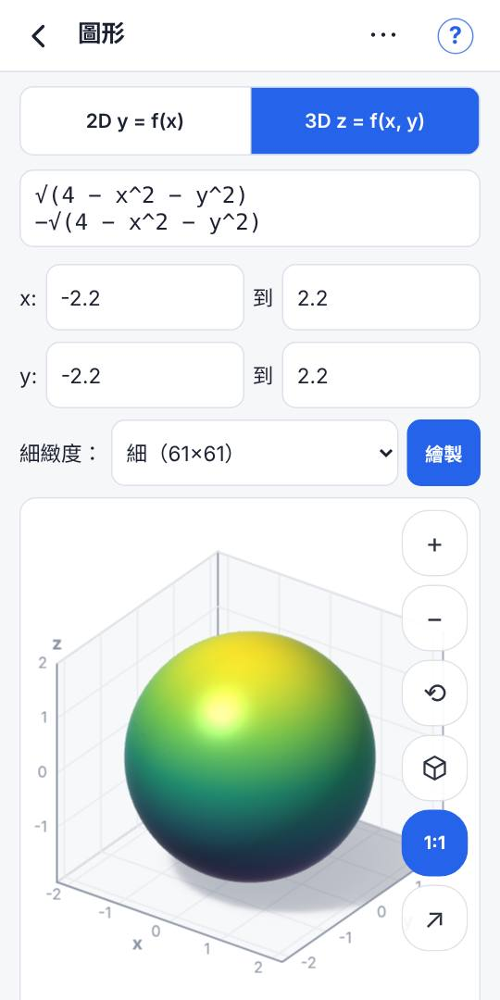
3D 由裝置的 GPU（WebGL 2）繪製，有接近真實的光線與陰影；依高度的顏色不變。較慢時，旋轉中會畫得稍粗，放開手指後再畫清楚。
在沒有 WebGL 2 的裝置上，3D 照以前的方式繪製；此時 透明 無法按下，並顯示「此裝置無法使用」。
偏導數 ▾ 會畫出 ∂f/∂x 和 ∂f/∂y。
體積與表面積（3D）
可以做什麼 3D 圖形中曲面下方（或兩個曲面之間）的體積，以及曲面的面積。
- 在 3D 圖形中畫出曲面。
- 打開 體積與表面積 ▾，體積和表面積立刻顯示。
- 選擇區域：矩形、圓盤、圍起來的部分，或用式子決定的區域。
範例的球（半徑 2）→ 體積 32π/3，表面積 16π
下方的 圖形範例 可以選任何立體。繪製 會以幾何圖形工具的值用 3D 繪製，更改數值 會開啟幾何圖形工具。
在 2D 圖形（⟳ 3D）或 由輪廓求旋轉體 做成的立體的 3D 中，體積與表面積 ▾ 會顯示在那裡求出的值（旋轉體的值）。畫別的式子時，區域的工具就會回來。
曲面在區域的一部分沒有實數值時，用圍成的部分測量 只在有實數值的部分測量。
表單畫面：微積分、方程式、矩陣
微分、積分、極限、總和
可以做什麼 按 微積分 頁的按鍵，會打開有空格 □ 的表單。
- 按 微積分 頁的 d/dx、∫、lim、Σ 等按鍵。
- 填好空格。變數維持 x 即可。
- 結果顯示在下方；= 把它留在歷史紀錄。
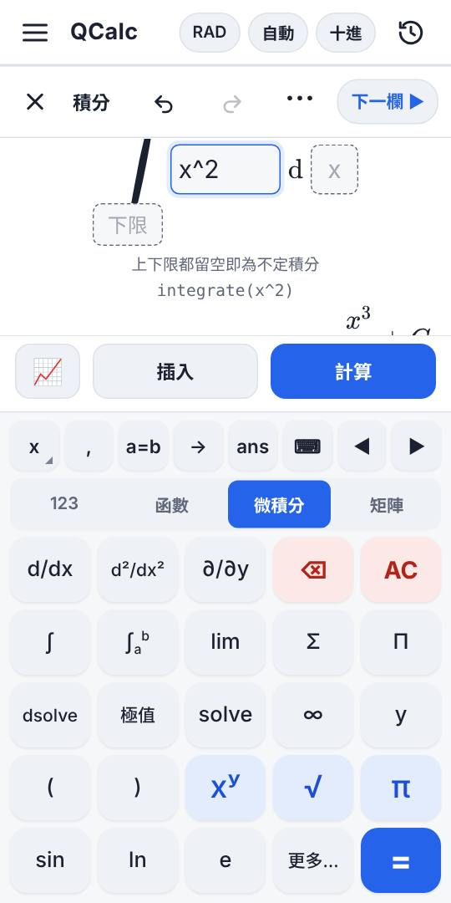
∫ x² sin(x) dx，0 到 π → π² − 4 ≈ 5.869604401
極限可選 兩側、從右側（+） 或 從左側（−）。
方程式
可以做什麼 解方程式和聯立方程式。
- 按 微積分 頁的方程式鍵，或輸入
solve(x^2 − 5x + 6 = 0)。 - 結果顯示為「x = 2 或 x = 3」。
solve(x^2 − 5x + 6 = 0) → x = 2，x = 3
矩陣與向量
可以做什麼 矩陣 頁的 ▦ 像表格一樣輸入矩陣（最多 30 × 30）。
- 在 矩陣 頁按 ▦。
- 選擇列數和行數，填好格子。
- 用 det、轉置、反矩陣等按鍵計算。
可以貼上試算表的表格；⋯ 中的 複製為表格（貼到試算表用） 可再複製出來。
設定、語言、小工具
設定
可以做什麼 常用的設定在上面，幾乎不改的在 更多設定。變更會立刻生效。
| 設定 | 改變的內容 |
|---|---|
| 角度單位 | 弧度、度、百分度 |
| 精確或近似 | 自動、一律精確、一律近似 |
| 數字格式 | 小數點和位數分組（數字格式） |
| 分數顯示 | 自動、小數、分數、帶分數 |
| 精確度（有效位數） | 計算精度（預設 10） |
| 各畫面的顯示位數 | 各工具畫面的顯示位數，以及幾何圖形、容器、立體與圖形共用的位數 (各畫面的顯示位數) |
| 淺色／深色 | 畫面的顏色 |
| 文字大小 | 歷史紀錄、輸入欄、結果的文字 |
| 色彩主題 | 按鍵的顏色（藍色以外是 QCalc Pro） |
| 輸入時顯示結果 | 預覽 |
| 立即更新匯率 | 立刻下載匯率 |
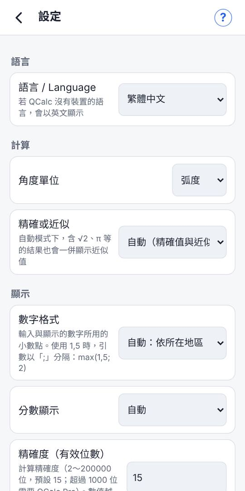
將所有設定重設為預設值 會把全部恢復成初始值（語言不變）。
各畫面的顯示位數
可以做什麼 每個工具畫面都能改變結果的顯示位數。從畫面標題右邊的 ⋯ 打開 顯示位數…。幾何圖形（含容器）、由輪廓求旋轉體與圖形（面積、長度、做成立體、3D）共用一個設定。
- 在工具畫面按 ⋯，選擇 顯示位數…。
- 從 建議（自動）、有效位數、小數點後 中選擇，再用 + 和 − 決定位數。選好的位數每個畫面各自記住。
- 選了位數時，末尾的 0 可設為 保留（2.50）（最初的設定。顯示到所選的位數：1.000000000）或 去掉（2.5）（1）。
- 改過預設位數的畫面，會在設定的一覽和 ⋯ 的 顯示位數… 加上「已變更」標記。
圓柱的體積 11250π ≈ 35342.91735 cm³ → 建議為 11250π ≈ 35342.9 cm³，小數點後 2 位為 11250π ≈ 35342.92 cm³，有效數字 4 位為 11250π ≈ 35340 cm³
幾何圖形、容器、由輪廓求旋轉體與圖形，還可以在 詳細：依量的種類、3D 圖、尾數處理、CSV ▾ 設定 依量的種類分別設定（體積、面積、長度、重量、%）、3D 圖中 的數（建議為有效數字 3 位，% 為小數點後 1 位）、尾數處理（四捨五入、無條件捨去、無條件進位）以及以 CSV 儲存的對照表（全部位數、依顯示）。精確值（11250π 等）不變，只改變「≈」後面的數。
恢復的方法有三種。只恢復該畫面時，按 ⋯ → 顯示位數… 中的 恢復為預設值（建議）。恢復所有畫面時，按設定中 各畫面的顯示位數 的 全部恢復為預設值（建議）（計算畫面的 精確度（有效位數） 也恢復為 10，小數點後的最多位數 恢復為不限制）。連設定一起恢復時，按設定中的 將所有設定重設為預設值（設定和各畫面的顯示位數恢復為預設值，語言保持不變）。 建議的位數比通常需要的多 1～2 位（原本就精確的值不會加位數）。金額顯示到裝置所在地區貨幣的最小單位（新臺幣為 1 元），也顯示末尾的 0（19.90）。幾何圖形、容器、由輪廓求旋轉體在「≈」後面顯示有效數字 6 位，圖形的面積、長度、做成立體與 3D 值為有效數字 8 位（小數至少 5 位），% 為小數點後 1 位。建議的位數中，除了金額、單價與統計之外，不顯示末尾的 0。
計算比顯示的位數多 12 位（接近計算上限時至少 4 位；數值積分多 4 位，最多 24 位），顯示時再捨入。
數值積分（圖形的面積、長度、體積等）可信的位數約到 20 位，選得更多也以 20 位顯示。以倍精度計算的值（價格、比例、單價、統計等工具，液面高度、容器的對照表、由輪廓求旋轉體、3D 圖中的數）最多 12 位。
計算畫面、公式畫面、計算筆記使用 設定 中的 精確度（有效位數）。
語言
可以做什麼 App 可用 English、日本語、Español、Deutsch、Français、한국어、繁體中文。
- 從 ☰ 選擇 語言。
- 選擇語言，App 會以該語言重新打開，歷史紀錄和輸入中的算式都保留。
- 與裝置相同 會恢復跟隨手機的語言。
Android 13 以後，也能在手機的設定中為每個 App 選擇語言。
小工具、圖塊與捷徑
可以做什麼 從主畫面的小工具、快速設定的圖塊或圖示的捷徑快速打開 QCalc。全部免費。
- 打開 工具 最下面的 快速開啟 QCalc。
- 選擇小工具或圖塊，依畫面操作。
- 長按圖示，會出現 新的計算、工具、換算 捷徑。
小工具顯示最後的結果，以及計算、工具、換算的按鈕。
關於這個 App 與隱私
可以做什麼 關於這個 App 顯示版本、隱私、授權和原始碼的連結。
- 點 到 Google Play 評分 會開啟 QCalc 在 Google Play 的頁面，可以給星星評分或寫評論。
- 點 把 QCalc 告訴別人 可以分享 QCalc 在 Google Play 的網址。
- 點 回報問題或建議 會在郵件 App 開啟草稿，只包含版本、裝置和語言，要不要寄出由您決定。
- QCalc 不收集個人資料，也不傳送任何東西。
- 只有下載匯率時才使用網路。
- 計算引擎採用 GNU GPL v2 或更新版本的授權（開放原始碼授權）。
QCalc Pro
免費可用的功能
可以做什麼 計算、2D 圖形、面積與長度、旋轉體、圖形、槽體（平板封頭）、日常工具、換算、統計、第一則計算筆記、小工具和這本說明書都免費，也沒有廣告。
- 沒有 Pro 也能免費試用 3D 一次。3D 畫面會顯示「3D 免費試用（僅限一次）」，關閉 3D 畫面即結束。不包含 GIF、STL 等匯出。
QCalc Pro 增加的功能
可以做什麼 購買一次就解鎖所有 Pro 功能，包括今後更新增加的功能。沒有訂閱，也沒有廣告。
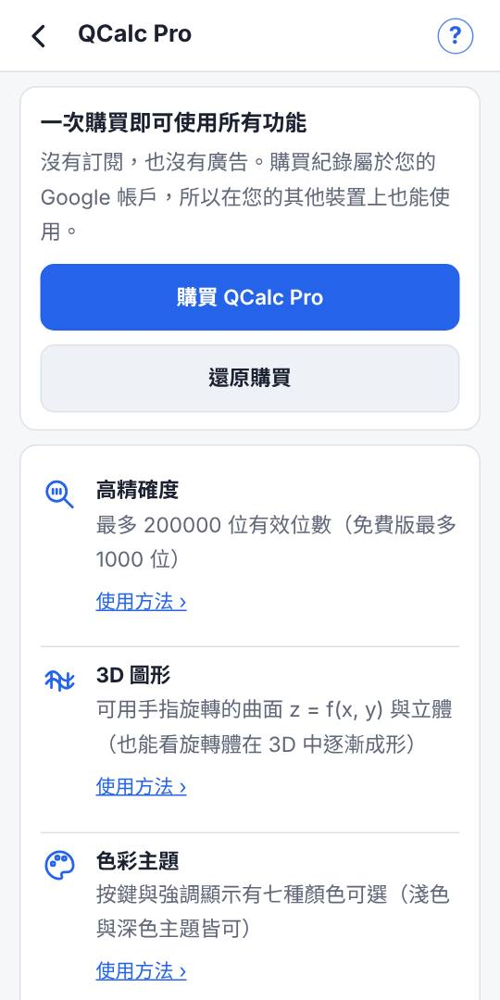
| 功能 | 本說明書的章節 |
|---|---|
| 超過 1000 位的有效數字（最多 200000 位） | 看懂結果 |
| 3D 圖形、以 3D 查看 | 3D 圖形 |
| 色彩主題（7 色） | 設定 |
| 匯出歷史紀錄（CSV） | 匯出歷史紀錄 |
| 表格的 CSV（貸款、儲蓄） | 貸款 |
| 槽體的封頭與容量表 | 槽體的封頭 |
| 由剖面資料製作立體 | 由剖面資料製作立體 |
| 以 3D 觀看立體與容器 | 以 3D 觀看立體與容器 |
| STL 檔 | STL 檔 |
| GIF 和無標記的圖片 | 分享 |
| 更多計算筆記並存成檔案 | 計算筆記 |
Pro 功能那一行的 使用方法 › 會打開本說明書的該節。
購買與恢復
價格會顯示在 Google Play 的購買畫面上。
- 從 ☰ 打開 QCalc Pro（也可從顯示鎖定功能的面板打開）。
- 按 購買 QCalc Pro，在 Google Play 的畫面中購買。
- 在已購買過的手機上，或重新安裝後，按 還原購買。
購買屬於你的 Google 帳戶，所以在你的其他裝置上也能使用。
遇到問題時
常見問題
- 結果不以小數顯示：請確認上方的按鈕或 精確或近似。
- 用 x 出現奇怪的結果：x 是變數；乘法請用 × 鍵。
- 匯率是舊的：請按 立即更新匯率（連上網路時）。
- 最上排按鍵不見了：文字較大時會隱藏；按分頁最後的 ⌨ 就會顯示。
- 3D 圖形打不開：3D 圖形是 QCalc Pro 的功能；沒有 Pro 也能免費試用一次（QCalc Pro）。
錯誤訊息與修正方法
可以做什麼 錯誤訊息會說明哪裡錯了以及如何修正。常見的有：
| 訊息 | 修正方法 |
|---|---|
| 括號沒有成對 | 讓 ( 和 ) 的數量相同 |
| 無法讀取 1.5（小數點是「,」時） | 寫成 1,5；引數用「;」分隔 |
| 單位不一致 | 只把同種類的量相加（m 和 kg 不能相加） |
| 請先畫出函數 | 打開面積或立體之前，先按圖形的 繪製 |
| 已達時間限制 | 延長時間限制或簡化算式 |
計算的時間限制
可以做什麼 非常久的計算會在 計算時間上限（秒）（預設 20 秒，1–3600 秒）時停止。
- 計算中會顯示通知；點一下就會停止。
- 要允許更長的時間，請在 設定 的 更多設定 中變更 計算時間上限（秒）。
使用結果時的注意事項
QCalc 的結果僅供參考。請勿用於交易或證明（包括法定計量）、設計與施工、報稅、醫療或安全相關的判斷。
- 槽體的液量假設是理想的形狀；實際的槽體可能不同。
- 重量使用一般的密度。
- 稅率是 2026 年 11 月時的一般稅率，可在欄位中變更。
- 匯率是下載的數值，不是實際交易的匯率。
- 與金錢或安全有關的工具，會在結果下方顯示一行注意文字。
用語集
| 用語 | 意思 |
|---|---|
| 精確值 | 用分數、√、π 表示的值。以「=」開頭 |
| 近似值 | 以小數表示的值。以「≈」開頭 |
| 有效數字 | 結果的位數（精度） |
| ans | 上一個結果 |
| 預覽 | 輸入時顯示在輸入欄下方的結果 |
| 旋轉體 | 把區域繞軸旋轉所形成的立體 |
| 封頭 | 槽體兩端的蓋子 |
| 容量表 | 列出每個液面高度液量的表 |
| STL | 3D 印表機用立體的檔案格式 |
| CSV | 試算表可以打開的文字檔表格 |
| QCalc Pro | 購買後解鎖的工作用功能 |
索引
- ☆ 固定在最上方 — 歷史紀錄與記憶, 置頂、備註與搜尋
- ↶ 復原 — 製作立體（旋轉體）
- 1.12.0 的新功能 — 1.12.0 的新功能
- 1.13.0 的新功能 — 1.13.0 的新功能
- 1.14.0 的新功能 — 1.14.0 的新功能
- 2D 圖形 — 2D 圖形
- 3D 印表機用的 STL 檔 — 3D 印表機用的 STL 檔
- 3D 圖中 — 各畫面的顯示位數
- 3D 圖形 — 3D 圖形
- App 中的範例與提示 — App 中的範例與提示
- QCalc Pro 增加的功能 — QCalc Pro 增加的功能
- QCalc 能做什麼 — QCalc 能做什麼
- ← 回到 2D — 製作立體（旋轉體）
- ← 回到幾何圖形 — 以 3D 觀看立體與容器
- ← 回到輪廓 — 由剖面資料製作立體
- 上方 — 1.14.0 的新功能, 以 3D 觀看立體與容器, 3D 圖形
- 下一欄 ▶ — 空格 □（表單）
- 以 3D 檢視 — 以 3D 觀看立體與容器, 由剖面資料製作立體, 製作立體（旋轉體）
- 以 3D 觀看立體與容器 — 以 3D 觀看立體與容器
- 以線條顯示方法 — 製作立體（旋轉體）
- 使用方法 › — QCalc Pro 增加的功能
- 使用結果時的注意事項 — 使用結果時的注意事項
- 使用說明書 — App 中的範例與提示
- 依量的種類分別設定 — 各畫面的顯示位數
- 依顯示 — 各畫面的顯示位數
- 保留（2.50） — 1.13.0 的新功能, 各畫面的顯示位數
- 候選 — 候選
- 偏導數 ▾ — 3D 圖形
- 做成立體 ▾ — 已知截面的立體
- 側面 — 1.14.0 的新功能, 以 3D 觀看立體與容器, 3D 圖形
- 價格：折扣與稅 — 1.12.0 的新功能, 價格：折扣與稅
- 儲存 STL 檔案 — 3D 印表機用的 STL 檔
- 儲蓄與複利 — 1.12.0 的新功能, 儲蓄與複利
- 免費可用的功能 — 免費可用的功能
- 全部位數 — 各畫面的顯示位數
- 全部恢復為預設值（建議） — 1.13.0 的新功能, 各畫面的顯示位數
- 兩側 — 微分、積分、極限、總和
- 其他封頭 ▾ — 槽體的封頭與容量表
- 函數 — 畫面說明, 輸入算式, 四個按鍵頁
- 函數、單位、貨幣的寫法 — 函數、單位、貨幣的寫法
- 分享圖形的圖片 — 分享圖片和 GIF
- 分享圖片和 GIF — 分享圖片和 GIF
- 分攤帳單 — 分攤帳單
- 分數顯示 — 設定
- 刪除與復原 — 刪除與復原
- 到 Google Play 評分 — 1.14.0 的新功能, 關於這個 App 與隱私
- 加上簡短備註 — 歷史紀錄與記憶, 置頂、備註與搜尋
- 加總多行 — 加總多行
- 匯出歷史紀錄（CSV） — 匯出歷史紀錄（CSV）
- 匯出記錄（CSV 檔） — 歷史紀錄與記憶, 匯出歷史紀錄（CSV）
- 半橢圓 2:1 — 槽體的封頭與容量表
- 半球 — 槽體的封頭與容量表
- 去掉（2.5） — 1.13.0 的新功能, 各畫面的顯示位數
- 各畫面的顯示位數 — 1.13.0 的新功能, 設定, 各畫面的顯示位數
- 單位與貨幣換算 — 1.12.0 的新功能, 單位與貨幣換算
- 單價比較：哪個便宜 — 1.12.0 的新功能, 單價：哪個比較便宜
- 單價：哪個比較便宜 — 單價：哪個比較便宜
- 四個按鍵頁 — 四個按鍵頁
- 四捨五入 — 各畫面的顯示位數
- 回報問題或建議 — 關於這個 App 與隱私
- 圖形 — 2D 圖形, 3D 圖形
- 圖形範例 — 體積與表面積（3D）
- 圖形：面積、體積、長度 — 圖形：面積、體積、長度
- 在 3D 中旋轉查看（QCalc Pro） — 以 3D 觀看立體與容器, 製作立體（旋轉體）
- 外框與刻度 — 3D 圖形
- 存成 STL — 3D 印表機用的 STL 檔
- 容器 — 1.14.0 的新功能, 3D 圖形
- 容器液量 — 1.12.0 的新功能, 槽體：液量與液位, 槽體的封頭與容量表, 以 3D 觀看立體與容器
- 封頭 — 槽體的封頭與容量表
- 將所有設定重設為預設值 — 設定, 各畫面的顯示位數
- 將運算式放進輸入欄 — 歷史紀錄與記憶
- 對半切開 — 以 3D 觀看立體與容器, 由剖面資料製作立體
- 導數、切線、極值 ▾ — 2D 圖形
- 小工具、圖塊與捷徑 — 小工具、圖塊與捷徑
- 小數點後 — 1.13.0 的新功能, 各畫面的顯示位數
- 小數點後的最多位數 — 各畫面的顯示位數
- 工具 — 1.12.0 的新功能, 找工具, 價格：折扣與稅, 圖形：面積、體積、長度
- 已知截面的立體 — 已知截面的立體
- 已變更 — 1.13.0 的新功能, 各畫面的顯示位數
- 帕普斯－古爾丁定理： — 製作立體（旋轉體）
- 常見問題 — 常見問題
- 平分帳單 — 1.12.0 的新功能, 分攤帳單
- 平面圖形 — 圖形：面積、體積、長度
- 建議（自動） — 1.13.0 的新功能, 各畫面的顯示位數
- 從右側（+） — 微分、積分、極限、總和
- 從左側（−） — 微分、積分、極限、總和
- 復原 — 刪除與復原
- 微分、積分、極限、總和 — 微分、積分、極限、總和
- 微積分 — 畫面說明, 四個按鍵頁, 空格 □（表單）, 微分、積分、極限、總和
- 快速開啟 QCalc — 找工具, 小工具、圖塊與捷徑
- 恢復為預設值（建議） — 1.13.0 的新功能, 各畫面的顯示位數
- 截面立體（在底面上立起形狀） — 已知截面的立體
- 找工具 — 找工具
- 把 QCalc 告訴別人 — 關於這個 App 與隱私
- 插入 — 清單：函數、單位、常數、自訂定義
- 換算 — 小工具、圖塊與捷徑
- 搜尋記錄 — 歷史紀錄與記憶, 置頂、備註與搜尋
- 數字格式 — 數字格式：小數點, 設定
- 數字格式：小數點 — 數字格式：小數點
- 文字大小 — 設定
- 新的計算 — 小工具、圖塊與捷徑
- 方程式 — 方程式
- 旋轉體的值 — 體積與表面積（3D）
- 日期 — 1.12.0 的新功能, 日期
- 時間 — 1.12.0 的新功能, 時間
- 更多設定 — 記憶鍵（M+ M− MR MC）, 設定, 計算的時間限制
- 更改數值 — 體積與表面積（3D）
- 最初的三個計算 — 最初的三個計算
- 有效位數 — 1.13.0 的新功能, 各畫面的顯示位數
- 末尾的 0 — 各畫面的顯示位數
- 材料（密度） — 1.14.0 的新功能, 以 3D 觀看立體與容器
- 槽體的封頭與容量表 — 槽體的封頭與容量表
- 槽體：液量與液位 — 槽體：液量與液位
- 正面 — 1.14.0 的新功能, 以 3D 觀看立體與容器, 3D 圖形
- 此裝置無法使用 — 3D 圖形
- 液量 — 3D 圖形
- 液面 — 以 3D 觀看立體與容器
- 液面高度 — 以 3D 觀看立體與容器
- 淺色／深色 — 設定
- 清單（函數、單位、常數） — 四個按鍵頁, 清單：函數、單位、常數、自訂定義
- 清單：函數、單位、常數、自訂定義 — 清單：函數、單位、常數、自訂定義
- 清除全部記錄 — 歷史紀錄與記憶
- 清除所有欄 — 空格 □（表單）
- 無條件捨去 — 各畫面的顯示位數
- 無條件進位 — 各畫面的顯示位數
- 用圍成的部分測量 — 體積與表面積（3D）
- 由剖面資料製作立體 — 由剖面資料製作立體
- 由實測值求體積 — 由測量值求體積
- 由測量值求體積 — 由測量值求體積
- 由輪廓求旋轉體 — 由剖面資料製作立體, 體積與表面積（3D）
- 百分比 — 1.12.0 的新功能, 百分比
- 看懂結果：精確值、近似值、分數 — 看懂結果：精確值、近似值、分數
- 矩陣 — 畫面說明, 四個按鍵頁, 矩陣與向量
- 矩陣與向量 — 矩陣與向量
- 空格 □（表單） — 空格 □（表單）
- 立即更新 — 貨幣與匯率
- 立即更新匯率 — 貨幣與匯率, 設定, 常見問題
- 立體圖形 — 1.12.0 的新功能, 圖形：面積、體積、長度, 以 3D 觀看立體與容器
- 範例與使用說明 — App 中的範例與提示
- 精確度（有效位數） — 看懂結果：精確值、近似值、分數, 設定, 各畫面的顯示位數
- 精確或近似 — 設定, 常見問題
- 統計 — 1.12.0 的新功能, 統計
- 繪製 — 2D 圖形, 3D 圖形, 體積與表面積（3D）, 錯誤訊息與修正方法
- 置頂、備註與搜尋 — 置頂、備註與搜尋
- 自動 — 數字格式：小數點
- 與裝置相同 — 語言
- 色彩主題 — 設定
- 製作立體（旋轉體） — 製作立體（旋轉體）
- 複製 — 加總多行
- 複製為表格（貼到試算表用） — 矩陣與向量
- 複製結果 — 歷史紀錄與記憶
- 角度單位 — 設定
- 計算時間上限（秒） — 計算的時間限制
- 計算的時間限制 — 計算的時間限制
- 計算筆記 — 1.12.0 的新功能, 計算筆記
- 記憶鍵（M+ M− MR MC） — 記憶鍵（M+ M− MR MC）
- 設定 — 看懂結果：精確值、近似值、分數, 數字格式：小數點, 記憶鍵（M+ M− MR MC）, 貨幣與匯率
- 詳細 ▾ — 由剖面資料製作立體
- 詳細：依量的種類、3D 圖、尾數處理、CSV ▾ — 各畫面的顯示位數
- 詳細：其他形狀 ▾ — 已知截面的立體
- 語言 — 語言
- 貨幣與匯率 — 貨幣與匯率
- 貸款 — 1.12.0 的新功能, 貸款
- 購買 QCalc Pro — 購買與恢復
- 購買與恢復 — 購買與恢復
- 輸入時顯示結果 — 設定
- 輸入算式 — 輸入算式
- 透明 — 1.14.0 的新功能, 以 3D 觀看立體與容器, 3D 圖形
- 這個表單的使用方法 › — 空格 □（表單）
- 速查表 ▾ — 槽體：液量與液位, 槽體的封頭與容量表
- 選取多行：合計、平均、複製 — 歷史紀錄與記憶, 加總多行
- 還原購買 — 購買與恢復
- 還款表（每月） — 貸款
- 錯誤訊息與修正方法 — 錯誤訊息與修正方法
- 長度 — 面積與長度
- 開放原始碼授權 — 關於這個 App 與隱私
- 關於這個 App — 1.14.0 的新功能, 關於這個 App 與隱私
- 關於這個 App 與隱私 — 關於這個 App 與隱私
- 面積與長度 — 面積與長度
- 面積與長度 ▾ — 面積與長度
- 顯示位數… — 1.13.0 的新功能, 各畫面的顯示位數
- 顯示記憶鍵（M+ M− MR MC） — 記憶鍵（M+ M− MR MC）
- 體積與表面積 ▾ — 體積與表面積（3D）
- 體積與表面積（3D） — 體積與表面積（3D）
- 📈 以圖形顯示 — 統計